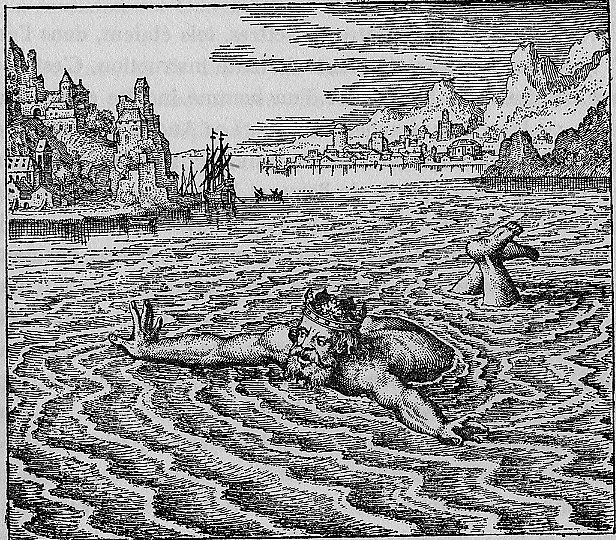

A crowned king struggles in ocean waves, his head and arms above the surface, calling out for rescue. His crown identifies him as royalty even in distress. From the shore or from a boat, a figure reaches toward the king or prepares to pull him from the water. The sea is rough, with whitecaps, and the landscape behind shows a rocky coastline.
The king, swimming in the sea, calling in a loud voice: He who saves me will receive a great reward.
Maier recounts the allegory of the king swimming in the sea who cries out that whoever saves him will receive a great reward. He develops this as a figure for philosophical gold dissolved in the mercurial sea — the noble substance submerged in the volatile solvent, needing to be rescued through fixation. The discourse argues that the king's promise of reward represents the multiplication of the stone: whoever successfully extracts and fixes the dissolved gold will be repaid many times over. Maier connects this to the broader tradition of the 'vegetable stone' that grows and multiplies like a living thing once properly fixed and nourished.
Emblem XXXI bears the motto: "The king, swimming in the sea, calling in a loud voice: He who saves me will receive a great reward."
Maier recounts the allegory of the king swimming in the sea who cries out that whoever saves him will receive a great reward. He develops this as a figure for philosophical gold dissolved in the mercurial sea — the noble substance submerged in the volatile solvent, needing to be rescued through fixation. The discourse argues that the king's promise of reward represents the multiplication of the stone: whoever successfully extracts and fixes the dissolved gold will be repaid many times over.
De Jong's source-critical analysis identifies the textual traditions Maier draws upon for this emblem.
The discourse draws on classical sources: Ovid, Metamorphoses X.560-704. The discourse draws on alchemical sources: Pseudo-Aristotle, Tractatulus de Practica Lapidis.
C. Morris Wescott: Third emblem in the Alchemical King sequence (XXIV, XXVIII, XXXI, XLIV).
C. Morris Wescott: Wescott analyzes Emblem XXXI's fuga: the consistent E-flat and B-flat centered on D indicate the Phrygian mode (violence), while stately half-notes shifting to rapid quarter notes musically depict the King's cry for help as he drowns. All three voices are treble, denying stability.
C. Morris Wescott: Wescott notes Emblem XXXI's King wears a unique crown studded with gems and topped by five tri-lobes, distinct from all other King images in AF, serving as identification for the wise rescuer.
H.M.E. de Jong: De Jong traces the king-in-the-sea allegory to the Rosarium Philosophorum and identifies the 'vegetable stone' that grows and multiplies as the product of successful fixation. She connects the king's promise of reward to the alchemical doctrine of multiplication — whoever rescues the dissolved gold will receive manifold return.
Figure: Rex
Third emblem in the Alchemical King sequence (XXIV, XXVIII, XXXI, XLIV).
Citation: Figure 3 discussion
Wescott analyzes Emblem XXXI's fuga: the consistent E-flat and B-flat centered on D indicate the Phrygian mode (violence), while stately half-notes shifting to rapid quarter notes musically depict the King's cry for help as he drowns. All three voices are treble, denying stability.
Citation: p. 4
Wescott notes Emblem XXXI's King wears a unique crown studded with gems and topped by five tri-lobes, distinct from all other King images in AF, serving as identification for the wise rescuer.
Citation: p. 3
De Jong traces the king-in-the-sea allegory to the Rosarium Philosophorum and identifies the 'vegetable stone' that grows and multiplies as the product of successful fixation. She connects the king's promise of reward to the alchemical doctrine of multiplication — whoever rescues the dissolved gold will receive manifold return.